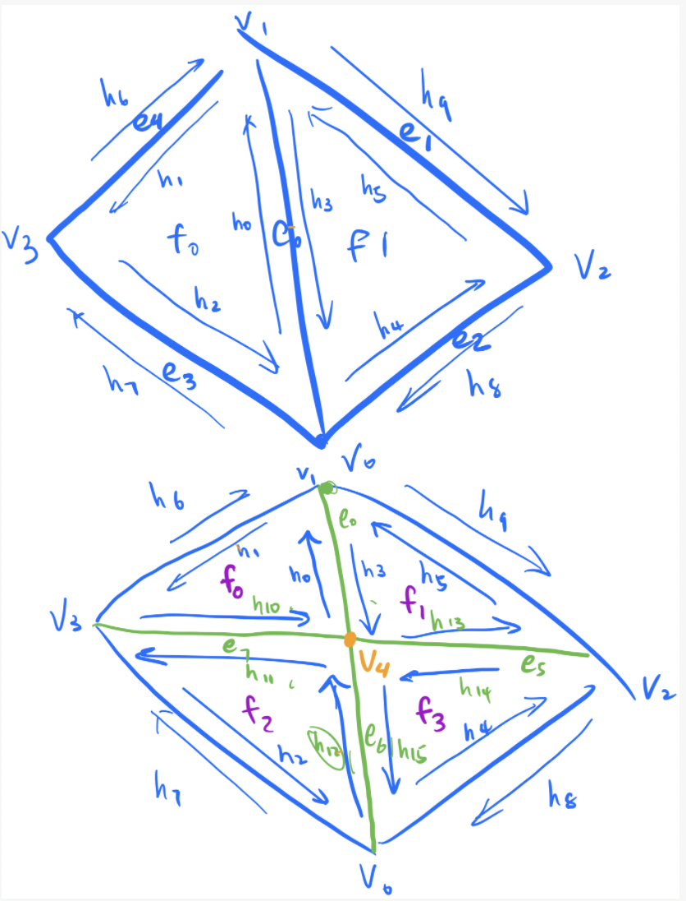

In Project 2, we worked with geometric modeling. We built Bezier Curves and surfaces using the de Casteljau algorithm, maniputlated triangle meshes implemented with half-edge data structures, as well as loop subdivision to smoothen out sharp edges and corners in geometric objects or meshes. This is a very interesting project that builds on the concepts taught on project 1, or, even if previous topics were not used, we were then working with ways to complete similar objectives in the 3D world. This was interesting and exciting, since, for example, in this project we saw how upsampling produces more triangles in the mesh and does some computations behind the scene to make sharp edges smoother. This can be important in real-world modeling since we use triangles most of the time to build objects. Because we use triangles, round objects (and in fact most objects) are simply approximations of their real-life counterparts. It was interesting to see how we can make these triangles look more rounded to find a more realistic look for objects that we model. Moreover, we worked with Bezier surfaces and curves, which are a massive part of graphics that are still in use today and trying to be improved upon. Seeing how models of real-world objects can be manipulated to look how we want (see task 6 symmetric alterations) was something new and exciting, as it applies to the 3D world. Essentially, in this project, we saw how we can turn the 2D algorithms and think about them slightly differently to come up with topics like Bezier Curves and surfaces, and meshes which extend to loop subdivision. We are getting closer and closer to modeling the real world in a photorealistic way, and Project 3 will only enhance this with the introduction of ray-tracing to the lighting aspect of things.
De Casteljau's algorithm is an algorithm that allows us to compute a point on a Bezier curve. This algorithm works
by recursively computing the control points in the next subdivision level until reaching the final, single point,
which lies on the Bezier curve at a given parameter. Given n control points p1, ..., pn and a parameter t, the de
Casteljau's algorithm calculates the intermediate control points p'1, ..., p'n-1 at the given parameter t using the
linear interpolation formula p'i = lerp(pi, pi+1, t) = (1 - t)pi + tpi+1.
In Task 1, we implemented evaluateStep, which calculates intermediate control points in the next subdivision level
given a list of control points and a parameter t. Specifically, we iterated through the list of input control points and for
every consecutive pair of points, we apply the lerp formula as described above to get the intermediate control point to add to
the result list of intermediate control points.
|
|
|
|
|
|
|
|
|
|
|
|
De Casteljau algorithm applies to Bezier surfaces by repeatedly applying the algorithm for the 1D curve case to
each row of the n * n gird of control points for Bezier surfaces. Given n * n grid of original control points, we
treat it as a Bezier curve with n control points. Then, using the parameter u, we apply linear interpolation
for every consecutive pair of control points to find the intermediate control points, and we recurse the process until
we reach a single, final point on the Bezier curve just like for the 1D case. After getting a point for each row of the
control points, we treat them as the n control points in 1D case and apply the de Casteljau algorithm again using parameter u
to find a single, final point. And this point is a point on the Bezier surface.
In Task 3, we implemented the algorithm for Bezier surfaces using three functions, BezierPatch::evaluateStep,
, BezierPatch::evaluate1D, and BezierPatch::evaluate. In BezierPatch::evaluateStep, we take as input
the n 3D control points for a level, and we use the linear interpolation fromula to compute the intermediate control points using
every consecutive pair of points. And in BezierPatch::evaluate1D, we implemented the process of repeatedly computing intermediate
control points until reaching the last final point. Specifically, we had a while loop that keeps calling BezierPatch::evaluateStep
if the size of the vector of intermediate points is larger than 1. Once we've reached the point where the vector only contains one single point, we return the 3D
point in the vector. Lastly, in BezierPatch::evaluate, we used a for loop to iterate over every single row of the grid of n * n
control points using BezierPatch::evaluate1D. And using the final point we got for each row using de Casteljau algorithm, we call BezierPatch::evaluate1D
again to calculate the final point on the surface.
|
|
To implement area-weighted normal vectors, we began by iterating through the vertices in the current mesh. To do this,
we used the printNeighboringVertices function in the primer. This loop iterates throughout the mesh until we reach the halfedge
we started at. Instead of printing though, we do the work we want. to begin the work inside the loop, we check if the current halfedge
is a boundary. If it is, we should not touch it and instead keep iterating to the next halfedge. If the halfedge is not a boundary
(i.e. h->isBoundary == false), we begin an iteration over the vertices of the current triangle we are in. This is to
calculate the area of the triangle. So, once we pass the if check for the boundary, we initialize an areaVec and an hCopy, which is a
copy of the h halfedge. Then, we iterate through the vertices by setting hCopy = hCopy->next() for the update. Before updating,
we get the position of the current vertex and the next() vertex. We add the cross product of these vertices to the areaVec and update.
We continue this loop until the current triangle is traversed, and we end up with areaVec for the current triangle. Then, since the sum of the cross
product (areaVec) is the non-normalized normal vector, we must find the area. To do this, we take the magnitude of areaVec, which is by definition two times
the area of the triangle, and divide by 2 to get area. Now that we have the area, we add it to the totalArea variable, and update the result Vector3D by
doing result += (area * h->face()->normal()), so that the normal is weighted by the area. These two loops are repeated until the original
halfedge is reached, like discussed before. Once we are done processing the loops, we simply return result / totalArea to normalize
the result according to the sum of the areas of all triangles processed.
|
|
|
|
|
|
When implementing the edge flip operation, we first check that the edge is not on the boundary by
by checking e0->halfedge()->isBoundary() and e0->halfedge()->twin()->isBoundary().
We return the edge e0 directly if it's on the boundary. Then, we set the halfedges of the four
vertices in the two triangles connected by e0 to any of the valid counterclockwise halfedge
connecting to it. And we set the halfedges of all the edges to any of the halfedge touching it. And for the
two faces to be any of the three halfedges on that face. Lastly, we need to update the properties of the halfedges.
Firstly, we set the vertex of the halfedge and its twin of the flip edge to the other pair of vertices. Then we set
the _next field of every inner halfedges (i.e., h0, ..., h5 in the following figure)
to their correspondong next halfedge in the resulting mesh. Lastly, we set the face of every inner halfedges as the face of
some halfedges change after edge flip. The biggest takeaway for trick we had for this part is to clearly assign variables
for each mesh element and draw out diagrams clearly labeling each part before implementing and manipulating the pointers.
We ran into the bug where the face disappear after we tried to flip an edge. Since we could see the edge being corrrectly flipped but the face disappearing, we suspected that the error is caused by not setting the face value of edges correctly. However, it was very difficult to debug as initially we didn't declare variables to refer to each vertex, egde, face, and halfedge. So at the end, we rewrote the whole function and labeled every element. In the process of rewriting our functions, we realized that we forgot to update the next values of halfedges after flip, which solved our bug.
|
|
|
|
|
|
|

|
We drew out the figure above to help us implement part 5. It actually helped us so well that once we followed this Diagram
and double-checked our code before running it, we passed on the first attempt. The first step for us was to find the position
for that the new vertex would be placed at. This would be the midpoint of the edge passed in. So we retrieved v0 and v1 from our diagram
(assuming e0 is the middle halfedge), and took the midpoint by adding each coordinate and dividing by 2. This is stored as a Vector3D for now.
We then call VertexIter v4 = newVertex(), to create a new vertex and set v4->position = midpoint. We then create
three new edges, e5, e6, e7, same as the diagram. We then set v4->isNew = true; e5->isNew = true; e7->isNew = true;, but
we set e6 and e0 isNew to false since they were part of the original edge that split, so it is technically not a new edge in the mesh. We then create
our new faces, f2 and f3. And finally create the 6 new halfedges, h10 - h15, as seen in the diagram. We then call setNeighbors(...) for
each of the 6 new halfedges. We pass in the respective next, twin, vertex, edge, and face for the halfedges from the diagram. Then, we set the next()
for each of the inside halfedges that were there before the split (h0 - h5). We then set the twin() for every single halfedge in the diagram. We then set the
face of every halfedge other than h6, h7, h8, h9, since those halfedges are apart of different halfedgeMesh's, so their faces are different.
We then update the vertex of h0 to be v4, and h3's vertex to be v1. We then set the halfedges of all vertices, edges, and faces, to any
valid halfedge on their face, and lastly return the new vertex v4. We actually did pass this on the first attempt since we double checked our
our code, so there was no debugging journey here.
|
|
|
|
|
|
|
|
We begin task 6 by computing the new positions for all vertices in the input mesh using
(1 - n * u) * original_position + u * original_neighbor_position_sum . Specifically,
we iterate over all the vertices. We first store the degree of the vertex into n, and use
the degree to check if n == 3, if it is, then u = 3/16, otherwise, it is 3/(8 * n). We initialize
a positionSum Vector3D, and iterate through the neighboring triangles, and update positionSum with
positionSum += neighbor->position. We then update
v->newPosition = (1.0f - n * u) * v->position + (u * positionSum). We then set
v->isNew = false, to indicate that this vertex is an old, existing vertex.
Step 2, is to compute the updated vertex position, which is the midpoint of the edges using the loop subdivision rule,
3/8 * (A + B) + 1/8 * (C + D), where A and B are the vertices of the shared edge connecting the two neighboring
triangles, while C and D are on the opposite of the ends of the two triangles. To do this, we iterate through all existing edges, and
and get the four positions to evaluate the loop subdivision rule, and set this value to e->newPosition. Lastly, we set e->isNew to false.
For step 3, we split every existing edge by calling mesh.splitEdge(e). In task 5, we made sure that newly created edges are
appended to the list of edges first and that the isNew value of new edges are set, so that we can use e->isNew as the terminating
condition for the for loop that iterates through the original edges only. In other words, the termination condition of the for loop iteration
for (EdgeIter e = mesh.edgesBegin(); e->isNew == false; e++) checks the the edge we are iterating over is not new, and once it sees
a new edge, it will exit out of the iteration. Additionally, after splitting an edge, we get back the midpoint created by the edge split and updated
its v->newPosition to the one we computed in step 2.
For step 4, we iterate through all the edges, including both old and new edges, to check for edges that are new and connect an old vertex to a new
vertex. If both conditions are true, we flip the edge and set its e->isNew to false.
Lastly, for step 5, we iterate over all vertices and copied over v->newPosition we computed in step 1 to v->position.
Coarse polygon meshes become higher resolution and smoother after we upsample it using loop subdivision. Sharp corners and edges became smoother but also more bumpier than less sharp coners. For example, we can see that when we upsample a cube, the sharper corners caused it to be asymmetric as some corners became more rounded than the others. And we can reduce this effect by presplitting some edges to preprocess the polygon into finer and more symmetric shape so that the resulting shape after upsampling is symmetric and has more even corners instead of bumpy ones. This can be illustrated in the images below, where we preprocessed the cube so that it is more even and more like a 3D cube after upsampling.
Lastly, to reduce the effect of the loop subdivision upsampling (i.e. trying to keep the shape as a cube), we simply split the middle edge first, then split the edges of the cube itself, and repeat this again for each of the four middle split edges, and each face. This helps to keep the sides of the cube more flat and cube-like than they were before, since we are simply creating more edges and more vertices. Since we have more triangles with this and symmetric edges, when we upsample, the initial polygon will be upsampled into more symmetric edges, thus preserving the shape of the earlier level.
|
|
|
|
|
|
Webpage link: https://cal-cs184-student.github.io/sp22-project-webpages-Linda0501/proj2/index.html